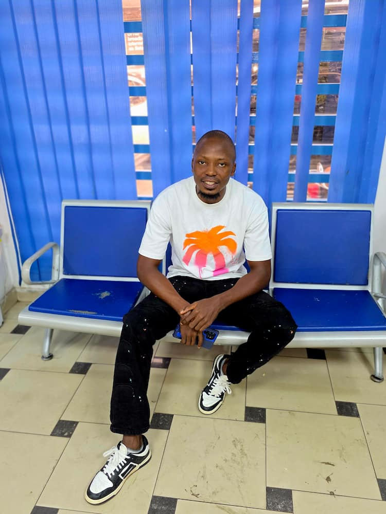

Emmanuel Fasinneh Mansaray | WDD130
Hello, my name is Emmanuel Fasinneh Mansaray, a little information about me is that I am 6ft 2inches tall and I am brown skin in complexion. I am currently studying at BYU-Idaho, doing Web fundamentals. It's fun and I love it. I am a degree holder but in a different field of study, but learning programming and web design has alway being my dream. Hence, the reason I am striving toward learning it. I love football and my favorite team is Arsenal.